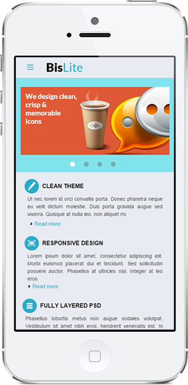

<p class="info text">Site estático desenvolvido do zero baseado no PSD Bislite. Adicionalmente fora desenvolvido um layout responsivo. Nele foram aplicadas as metodologias BEM, SMACSS e OOCSS, para uma estilização modularizada.</p>

<!-- <a href="#" title="Clique para visitar este projeto" target="_blank" class="button button-visit">Ver Projeto</a>
<a href="#" class="button button-more">Mais Imagens</a>
 -->
